Dose-Response Assay Compilation
Last updated: 2021-04-19
Checks: 6 1
Knit directory: toxin_dose_responses/
This reproducible R Markdown analysis was created with workflowr (version 1.6.2). The Checks tab describes the reproducibility checks that were applied when the results were created. The Past versions tab lists the development history.
Great! Since the R Markdown file has been committed to the Git repository, you know the exact version of the code that produced these results.
Great job! The global environment was empty. Objects defined in the global environment can affect the analysis in your R Markdown file in unknown ways. For reproduciblity it’s best to always run the code in an empty environment.
The command set.seed(20210305) was run prior to running the code in the R Markdown file. Setting a seed ensures that any results that rely on randomness, e.g. subsampling or permutations, are reproducible.
Great job! Recording the operating system, R version, and package versions is critical for reproducibility.
Nice! There were no cached chunks for this analysis, so you can be confident that you successfully produced the results during this run.
Using absolute paths to the files within your workflowr project makes it difficult for you and others to run your code on a different machine. Change the absolute path(s) below to the suggested relative path(s) to make your code more reproducible.
| absolute | relative |
|---|---|
| ~/Documents/projects/toxin_dose_responses/ | . |
Great! You are using Git for version control. Tracking code development and connecting the code version to the results is critical for reproducibility.
The results in this page were generated with repository version 26547e8. See the Past versions tab to see a history of the changes made to the R Markdown and HTML files.
Note that you need to be careful to ensure that all relevant files for the analysis have been committed to Git prior to generating the results (you can use wflow_publish or wflow_git_commit). workflowr only checks the R Markdown file, but you know if there are other scripts or data files that it depends on. Below is the status of the Git repository when the results were generated:
Ignored files:
Ignored: .DS_Store
Ignored: .Rhistory
Ignored: analysis/.DS_Store
Ignored: output/.DS_Store
Untracked files:
Untracked: code/toxin.geno.matrix.sh
Untracked: data/drugclasses.csv
Untracked: data/tx.doses.mappings.numbers
Untracked: output/2,4-D_EC.plot.png
Untracked: output/2,4-D_EC10.csv
Untracked: output/2,4-D_EC50.csv
Untracked: output/2,4-D_EC90.csv
Untracked: output/2,4-D_EC90.plot.png
Untracked: output/3model.heatmap.png
Untracked: output/4model.heatmap.png
Untracked: output/Aldicarb_EC.plot.png
Untracked: output/Aldicarb_EC10.csv
Untracked: output/Aldicarb_EC50.csv
Untracked: output/Aldicarb_EC90.csv
Untracked: output/Aldicarb_EC90.plot.png
Untracked: output/Arsenic trioxide_EC.plot.png
Untracked: output/Arsenic trioxide_EC10.csv
Untracked: output/Arsenic trioxide_EC90.plot.png
Untracked: output/Atrazine_EC.plot.png
Untracked: output/Atrazine_EC10.csv
Untracked: output/Atrazine_EC50.csv
Untracked: output/Atrazine_EC90.plot.png
Untracked: output/Atrazine_MDHD.junk.png
Untracked: output/Cadmium dichloride_EC.plot.png
Untracked: output/Cadmium dichloride_EC10.csv
Untracked: output/Cadmium dichloride_EC50.csv
Untracked: output/Cadmium dichloride_EC90.csv
Untracked: output/Cadmium dichloride_EC90.plot.png
Untracked: output/Cadmium dichloride_MDHD.junk.png
Untracked: output/Carbaryl_EC.plot.png
Untracked: output/Carbaryl_EC10.csv
Untracked: output/Carbaryl_EC50.csv
Untracked: output/Carbaryl_EC90.csv
Untracked: output/Carbaryl_EC90.plot.png
Untracked: output/Carboxin_EC.plot.png
Untracked: output/Carboxin_EC10.csv
Untracked: output/Carboxin_EC50.csv
Untracked: output/Carboxin_EC90.csv
Untracked: output/Carboxin_EC90.plot.png
Untracked: output/Chlorfenapyr_EC.plot.png
Untracked: output/Chlorfenapyr_EC10.csv
Untracked: output/Chlorfenapyr_EC50.csv
Untracked: output/Chlorfenapyr_EC90.csv
Untracked: output/Chlorfenapyr_EC90.plot.png
Untracked: output/Chlorothalonil_EC.plot.png
Untracked: output/Chlorothalonil_EC10.csv
Untracked: output/Chlorothalonil_EC50.csv
Untracked: output/Chlorothalonil_EC90.csv
Untracked: output/Chlorothalonil_EC90.plot.png
Untracked: output/Chlorpyrifos_EC.plot.png
Untracked: output/Chlorpyrifos_EC10.csv
Untracked: output/Chlorpyrifos_EC50.csv
Untracked: output/Chlorpyrifos_EC90.csv
Untracked: output/Chlorpyrifos_EC90.plot.png
Untracked: output/Copper(II) chloride_EC.plot.png
Untracked: output/Copper(II) chloride_EC10.csv
Untracked: output/Copper(II) chloride_EC50.csv
Untracked: output/Copper(II) chloride_EC90.csv
Untracked: output/Copper(II) chloride_EC90.plot.png
Untracked: output/Deltamethrin_EC.plot.png
Untracked: output/Deltamethrin_EC10.csv
Untracked: output/Deltamethrin_EC50.csv
Untracked: output/Deltamethrin_EC90.csv
Untracked: output/Deltamethrin_EC90.plot.png
Untracked: output/EC10.strain.comp.Carbamate Insecticide.png
Untracked: output/EC10.strain.comp.Flame Retardant.png
Untracked: output/EC10.strain.comp.Fungicide.png
Untracked: output/EC10.strain.comp.Heavy Metal.png
Untracked: output/EC10.strain.comp.Herbicide.png
Untracked: output/EC10.strain.comp.Organophosphate insecticide.png
Untracked: output/EC10.strain.comp.Pro-insecticide.png
Untracked: output/EC10.strain.comp.Synthetic Pyrethroid Insecticide.png
Untracked: output/EC10.strain.comp.png
Untracked: output/EC10.survey.png
Untracked: output/EC90.strain.comp.Carbamate Insecticide.png
Untracked: output/EC90.strain.comp.Flame Retardant.png
Untracked: output/EC90.strain.comp.Fungicide.png
Untracked: output/EC90.strain.comp.Heavy Metal.png
Untracked: output/EC90.strain.comp.Herbicide.png
Untracked: output/EC90.strain.comp.Organophosphate insecticide.png
Untracked: output/EC90.strain.comp.Pro-insecticide.png
Untracked: output/EC90.strain.comp.Synthetic Pyrethroid Insecticide.png
Untracked: output/H2.plot.20210306.png
Untracked: output/H2.plot.20210308.png
Untracked: output/H2.plot.20210314.png
Untracked: output/Lead(II) nitrate_EC.plot.png
Untracked: output/Lead(II) nitrate_EC10.csv
Untracked: output/Lead(II) nitrate_EC90.plot.png
Untracked: output/Malathion_EC.plot.png
Untracked: output/Malathion_EC10.csv
Untracked: output/Malathion_EC50.csv
Untracked: output/Malathion_EC90.csv
Untracked: output/Malathion_EC90.plot.png
Untracked: output/Mancozeb_EC.plot.png
Untracked: output/Mancozeb_EC10.csv
Untracked: output/Mancozeb_EC50.csv
Untracked: output/Mancozeb_EC90.csv
Untracked: output/Mancozeb_EC90.plot.png
Untracked: output/Manganese dichloride_EC.plot.png
Untracked: output/Manganese dichloride_EC10.csv
Untracked: output/Manganese dichloride_EC50.csv
Untracked: output/Manganese dichloride_EC90.csv
Untracked: output/Manganese dichloride_EC90.plot.png
Untracked: output/Methomyl_EC.plot.png
Untracked: output/Methomyl_EC10.csv
Untracked: output/Methomyl_EC50.csv
Untracked: output/Methomyl_EC90.csv
Untracked: output/Methomyl_EC90.plot.png
Untracked: output/Methylmercury dichloride_EC.plot.png
Untracked: output/Methylmercury dichloride_EC10.csv
Untracked: output/Methylmercury dichloride_EC50.csv
Untracked: output/Methylmercury dichloride_EC90.csv
Untracked: output/Methylmercury dichloride_EC90.plot.png
Untracked: output/Nickel dichloride_EC.plot.png
Untracked: output/Nickel dichloride_EC10.csv
Untracked: output/Nickel dichloride_EC50.csv
Untracked: output/Nickel dichloride_EC90.csv
Untracked: output/Nickel dichloride_EC90.plot.png
Untracked: output/Paraquat_EC.plot.png
Untracked: output/Paraquat_EC10.csv
Untracked: output/Paraquat_EC50.csv
Untracked: output/Paraquat_EC90.csv
Untracked: output/Paraquat_EC90.plot.png
Untracked: output/Propoxur_EC.plot.png
Untracked: output/Propoxur_EC10.csv
Untracked: output/Propoxur_EC50.csv
Untracked: output/Propoxur_EC90.csv
Untracked: output/Propoxur_EC90.plot.png
Untracked: output/Pyraclostrobin_EC.plot.png
Untracked: output/Pyraclostrobin_EC10.csv
Untracked: output/Pyraclostrobin_EC50.csv
Untracked: output/Pyraclostrobin_EC90.csv
Untracked: output/Pyraclostrobin_EC90.plot.png
Untracked: output/Pyraclostrobin_MDHD.junk.png
Untracked: output/Silver nitrate_EC.plot.png
Untracked: output/Silver nitrate_EC10.csv
Untracked: output/Silver nitrate_EC50.csv
Untracked: output/Silver nitrate_EC90.csv
Untracked: output/Silver nitrate_EC90.plot.png
Untracked: output/Triphenyl phosphate_EC.plot.png
Untracked: output/Triphenyl phosphate_EC10.csv
Untracked: output/Triphenyl phosphate_EC50.csv
Untracked: output/Triphenyl phosphate_EC90.csv
Untracked: output/Triphenyl phosphate_EC90.plot.png
Untracked: output/Triphenyl phosphate_MDHD.junk.png
Untracked: output/Zinc dichloride_EC.plot.png
Untracked: output/Zinc dichloride_EC10.csv
Untracked: output/Zinc dichloride_EC50.csv
Untracked: output/Zinc dichloride_EC90.csv
Untracked: output/Zinc dichloride_EC90.plot.png
Untracked: output/carb.DRCs.png
Untracked: output/cv.control.wells.csv
Untracked: output/fungi.DRCs.png
Untracked: output/herb.DRCs.png
Untracked: output/manganese_toxin23_p57.png
Untracked: output/metal.DRCs.png
Untracked: output/organophosphate.DRCs.png
Untracked: output/toxicants.8strains.EC90.csv
Untracked: output/toxicants.8strains.csv
Unstaged changes:
Modified: analysis/doseresponsemodels.Rmd
Note that any generated files, e.g. HTML, png, CSS, etc., are not included in this status report because it is ok for generated content to have uncommitted changes.
These are the previous versions of the repository in which changes were made to the R Markdown (analysis/toxin8strains.Rmd) and HTML (docs/toxin8strains.html) files. If you’ve configured a remote Git repository (see ?wflow_git_remote), click on the hyperlinks in the table below to view the files as they were in that past version.
| File | Version | Author | Date | Message |
|---|---|---|---|---|
| Rmd | 26547e8 | sam-widmayer | 2021-04-19 | integrate toxin27A |
| html | bc5c5b5 | sam-widmayer | 2021-04-09 | Build site. |
| Rmd | ea23ad6 | sam-widmayer | 2021-04-09 | toxin26A and tx group analyses |
| Rmd | 5cdca37 | sam-widmayer | 2021-04-09 | toxin26A and tx group analyses |
| html | 1f8d045 | sam-widmayer | 2021-04-07 | Build site. |
| Rmd | 59b9a05 | sam-widmayer | 2021-04-07 | explicit DRC plotting |
| html | 0a1d24d | sam-widmayer | 2021-04-07 | Build site. |
| Rmd | 0cc26e9 | sam-widmayer | 2021-04-07 | require ggbeeswarm |
| Rmd | d4ed1ff | sam-widmayer | 2021-04-07 | tx-specific cleaning and plotting of DRCs |
| html | 19f2802 | sam-widmayer | 2021-03-29 | Build site. |
| Rmd | 3720d88 | sam-widmayer | 2021-03-29 | integrate toxin24A |
| Rmd | 736d501 | sam-widmayer | 2021-03-29 | integrate toxin24A |
| Rmd | ecf1af1 | sam-widmayer | 2021-03-29 | integrate toxin24A |
| html | 0e83f2b | sam-widmayer | 2021-03-24 | Build site. |
| Rmd | 7d105e2 | sam-widmayer | 2021-03-24 | progress meeting updates |
| html | 02a633e | sam-widmayer | 2021-03-24 | Build site. |
| Rmd | f2b09cd | sam-widmayer | 2021-03-23 | EC plot and DRC evaluation updates |
| Rmd | 07d524b | sam-widmayer | 2021-03-23 | EC plot and DRC evaluation updates |
| html | deb1df5 | sam-widmayer | 2021-03-21 | Build site. |
| Rmd | 32ad79a | sam-widmayer | 2021-03-21 | heatmap outputs |
| Rmd | 7ccc7de | sam-widmayer | 2021-03-21 | heatmap outputs |
| Rmd | 01b3361 | sam-widmayer | 2021-03-21 | heatmap outputs |
| Rmd | 7eb07f1 | sam-widmayer | 2021-03-21 | toxin23 updates and Worm_Length filter for MDHD data |
| html | 7ae886c | sam-widmayer | 2021-03-14 | Build site. |
| Rmd | 3f4a99b | sam-widmayer | 2021-03-14 | integrate toxin22 results |
| html | 212e0ae | sam-widmayer | 2021-03-08 | Build site. |
| html | cb6e132 | sam-widmayer | 2021-03-06 | Build site. |
| Rmd | 46c9647 | sam-widmayer | 2021-03-06 | static working directory |
| Rmd | 41bdaa0 | sam-widmayer | 2021-03-05 | dynamic working directory |
| Rmd | 0c9d312 | sam-widmayer | 2021-03-05 | initiate toxin DRC analysis repo |
Purpose:
- Compile past assay results.
- Provide dose-response curves for each toxin.
Analysis Date: April 19, 2021
Assay Summary


Metadata_Experiment bleach median cv.censor
1 toxin09A 1 0.3836145 0
2 toxin10A 1 0.4305145 0
3 toxin11A 1 0.4277093 0
4 toxin14A 1 0.3309190 0
5 toxin14A 2 0.6202207 1
6 toxin14A 3 0.3139512 0
7 toxin14B 1 0.3531075 0
8 toxin14B 2 0.6821373 1
9 toxin14B 3 0.4144394 0
10 toxin15A 1 0.3776043 0
11 toxin15A 2 0.3237794 0
12 toxin15A 3 0.5858180 1
13 toxin15B 1 0.3014705 0
14 toxin15B 2 0.3782805 0
15 toxin15B 3 0.5791055 1
16 toxin16A 1 0.3024091 0
17 toxin16A 2 0.6394078 1
18 toxin16A 3 0.6430524 1
19 toxin17A 1 0.3203867 0
20 toxin17A 2 0.5750981 1
21 toxin17A 3 0.3401813 0
22 toxin18A 1 0.3202607 0
23 toxin18A 2 0.3228881 0
24 toxin18A 3 0.3338709 0
25 toxin19A 1 0.3333869 0
26 toxin19A 2 0.3179010 0
27 toxin19A 3 0.3330344 0
28 toxin22A 1 0.2625332 0
29 toxin22A 2 0.2967801 0
30 toxin22A 3 0.2706957 0
31 toxin23A 1 0.3243216 0
32 toxin23A 2 0.3411546 0
33 toxin23A 3 0.2809086 0
34 toxin24A 1 0.2672445 0
35 toxin24A 2 0.3018825 0
36 toxin24A 3 0.3152494 0
37 toxin25A 1 0.3024884 0
38 toxin25A 2 0.2940015 0
39 toxin25A 3 0.3507315 0
40 toxin26A 1 0.3178134 0
41 toxin26A 2 0.2864734 0
42 toxin26A 3 0.2638100 0
43 toxin27 1 0.3471797 0
44 toxin27 2 0.3083537 0
45 toxin27 3 0.3159872 0 Df Sum Sq Mean Sq F value Pr(>F)
assay 16 2.5484 0.15928 19.149 < 2e-16 ***
as.factor(bleach) 2 0.4302 0.21509 25.859 4.3e-11 ***
strain 7 0.0979 0.01399 1.682 0.113
assay:as.factor(bleach) 26 2.0940 0.08054 9.683 < 2e-16 ***
Residuals 302 2.5120 0.00832
---
Signif. codes: 0 '***' 0.001 '**' 0.01 '*' 0.05 '.' 0.1 ' ' 1Silver

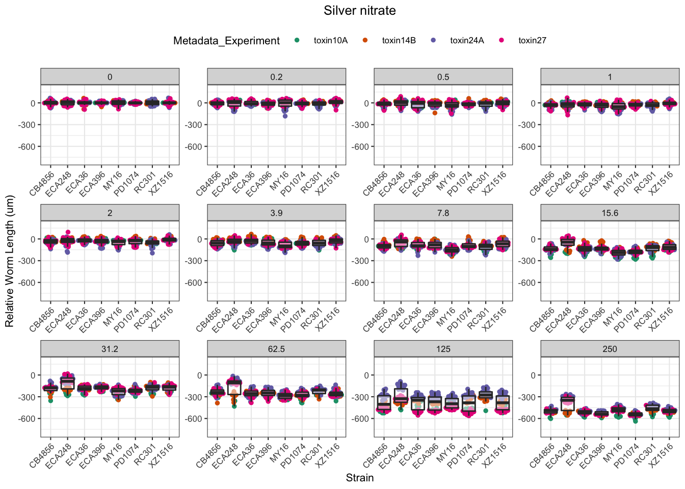

Cadmium
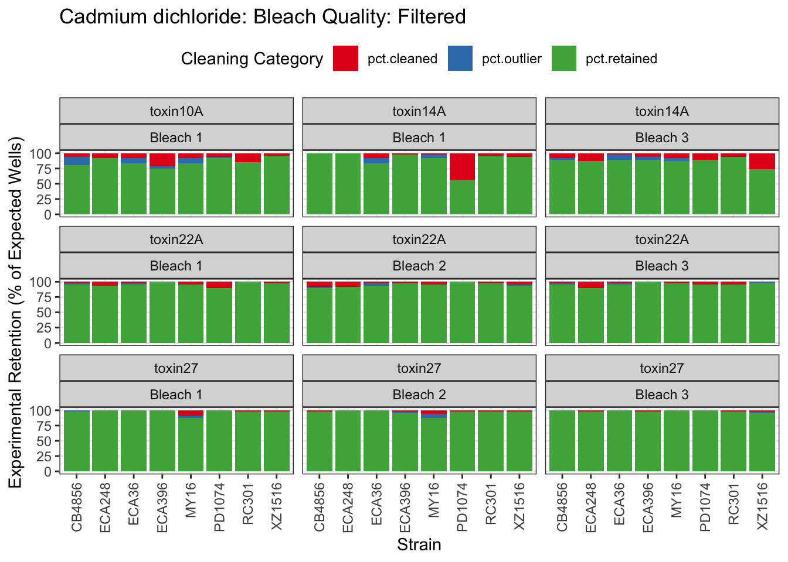


Copper


Nickel
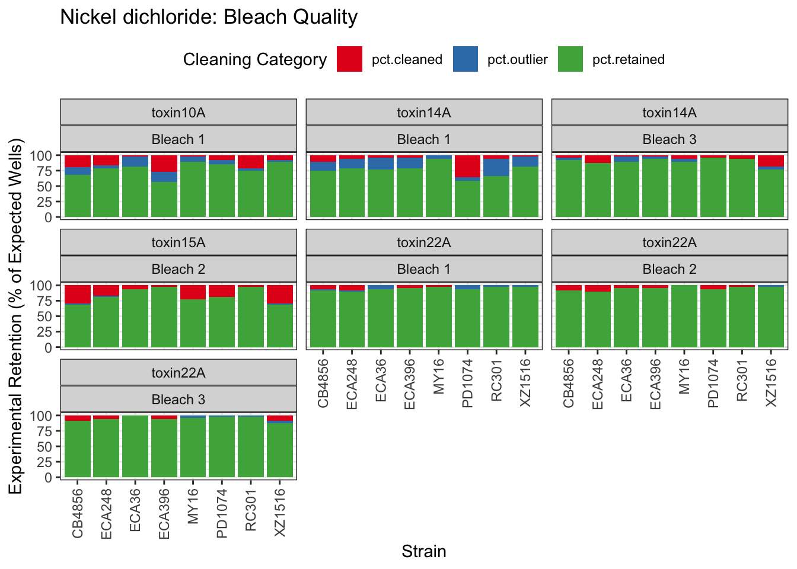


Paraquat


Zinc
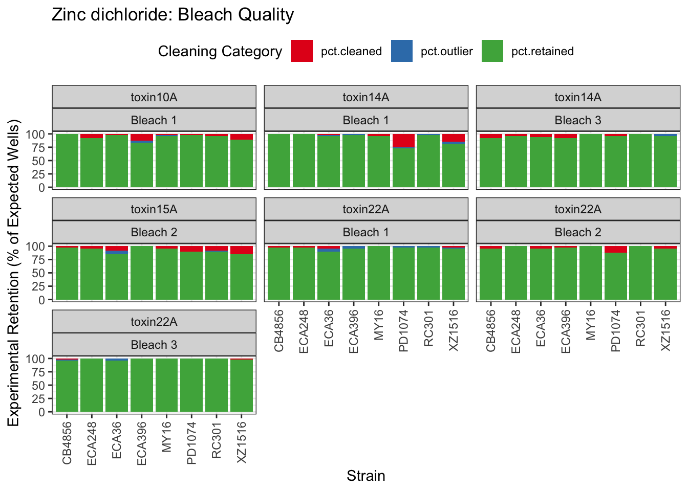

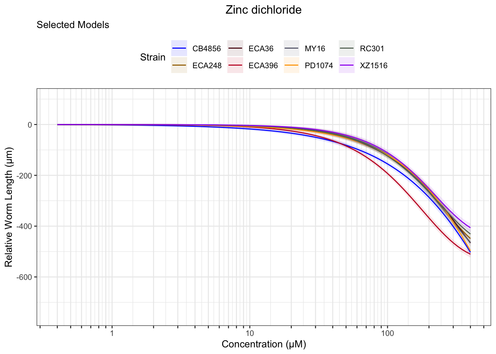
Pyraclostrobin

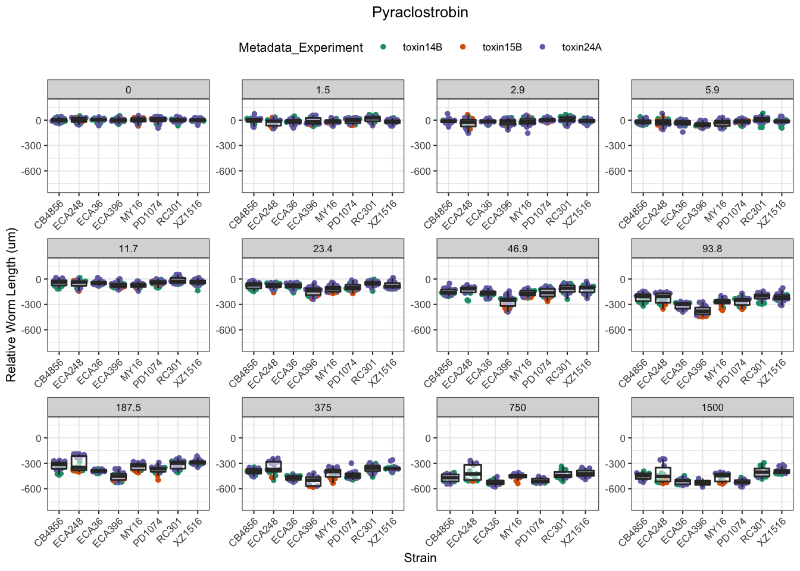

Aldicarb
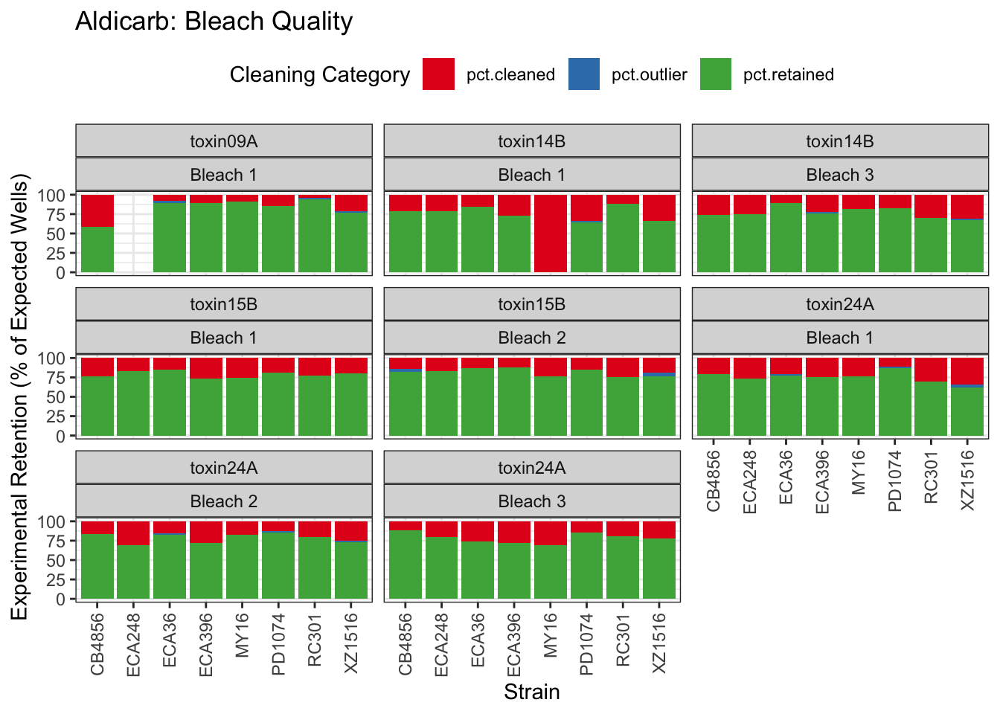


Chlorfenapyr

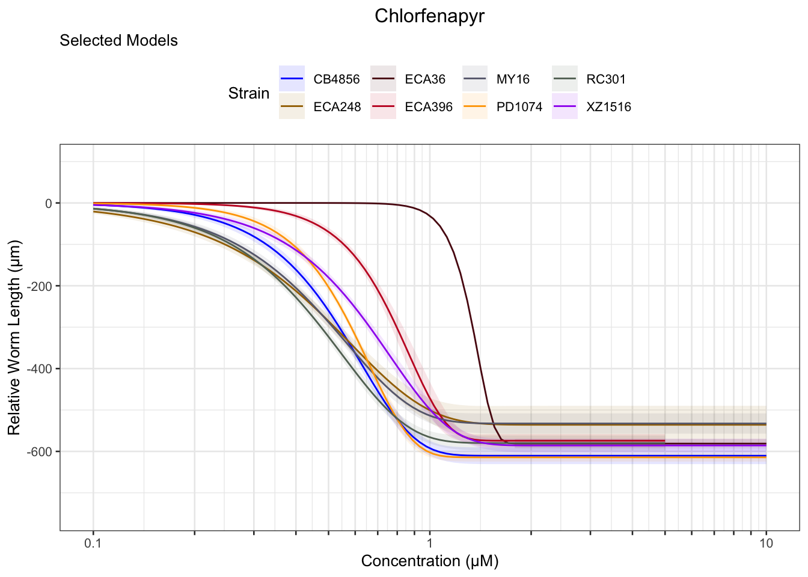
Methomyl


Methyl Mercury


Triphenyl phosphate


Arsenic trioxide


Carbaryl


Carboxin

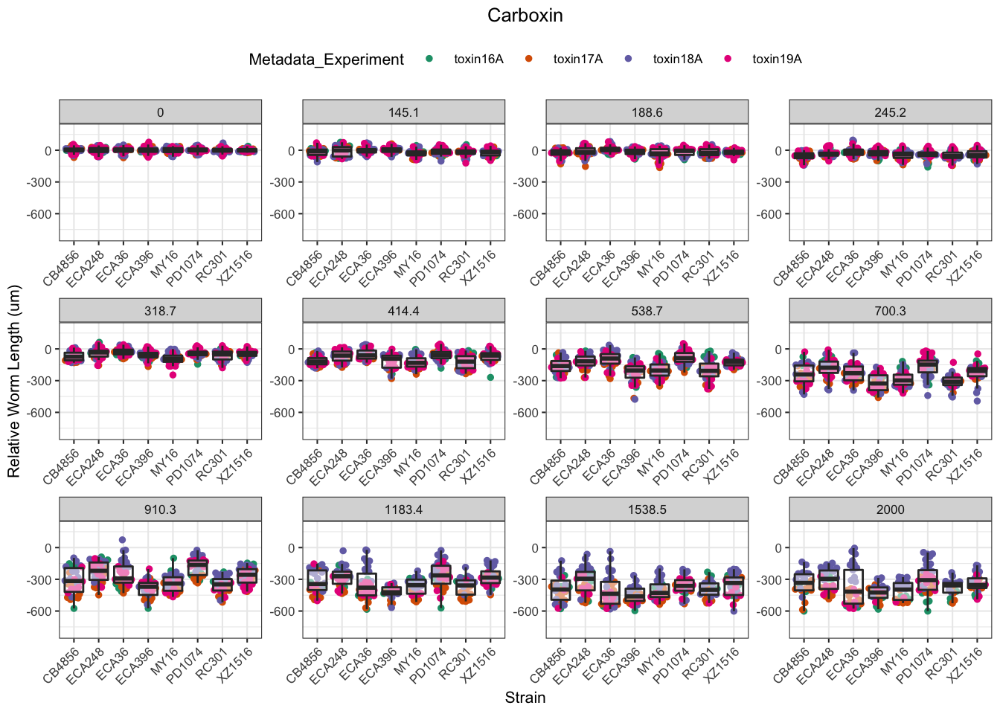
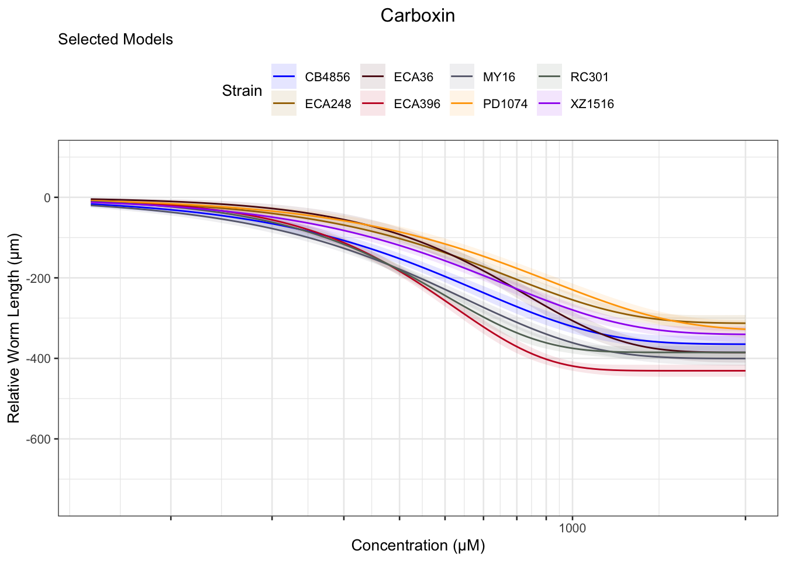
Chlorpyrifos
[1] "Excluding toxin17A: No Response"

Lead (II) nitrate
%20nitrate-1.png)
%20nitrate-2.png)
%20nitrate-3.png)
Atrazine
[1] "Excluding toxin16A: Inaccurate Dilution Series"

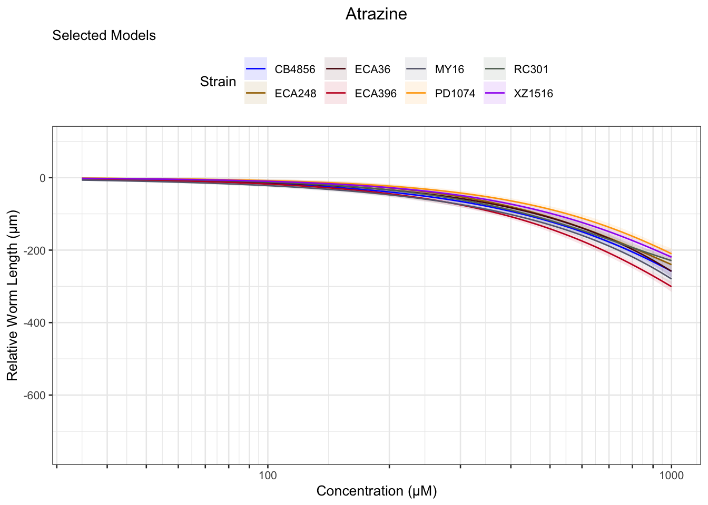
2,4-D


Malathion

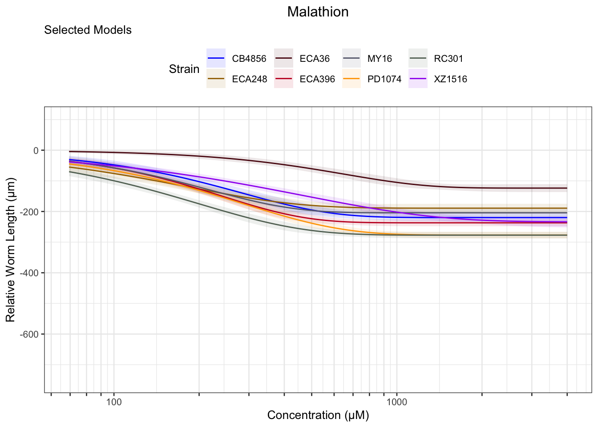
Chlorothalonil


Deltamethrin
| Version | Author | Date |
|---|---|---|
| deb1df5 | sam-widmayer | 2021-03-21 |

Error in optim(startVec, opfct, hessian = TRUE, method = optMethod, control = list(maxit = maxIt, :
non-finite finite-difference value [3]
[1] "Unable to optimize model"
[1] "Unable to optimize model"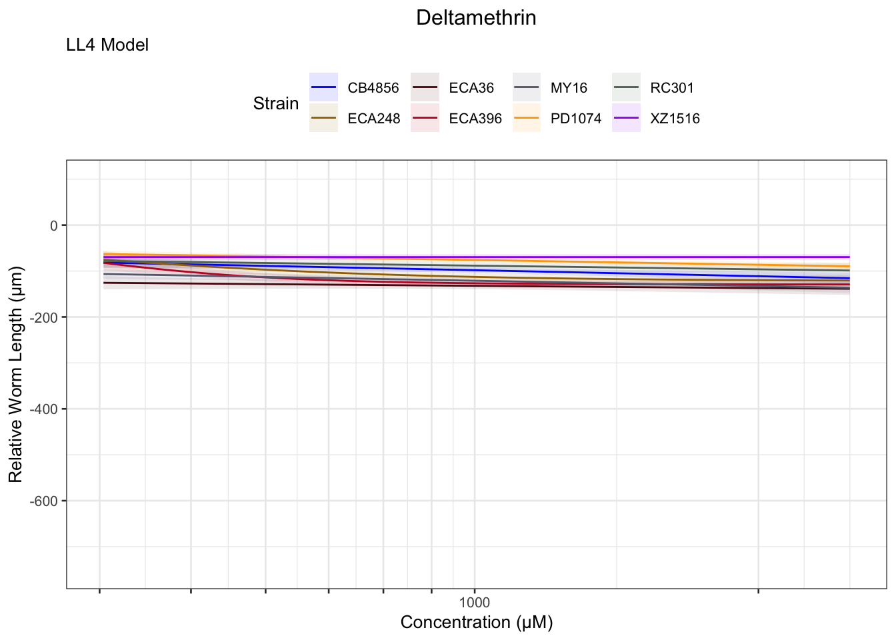


Mancozeb
| Version | Author | Date |
|---|---|---|
| 0a1d24d | sam-widmayer | 2021-04-07 |

| Version | Author | Date |
|---|---|---|
| 0a1d24d | sam-widmayer | 2021-04-07 |

| Version | Author | Date |
|---|---|---|
| 1f8d045 | sam-widmayer | 2021-04-07 |
EC Estimates


EC10
[[1]]
[[2]]
| Version | Author | Date |
|---|---|---|
| bc5c5b5 | sam-widmayer | 2021-04-09 |
[[3]]
| Version | Author | Date |
|---|---|---|
| bc5c5b5 | sam-widmayer | 2021-04-09 |
[[4]]
| Version | Author | Date |
|---|---|---|
| bc5c5b5 | sam-widmayer | 2021-04-09 |
[[5]]
| Version | Author | Date |
|---|---|---|
| bc5c5b5 | sam-widmayer | 2021-04-09 |
[[6]]
| Version | Author | Date |
|---|---|---|
| bc5c5b5 | sam-widmayer | 2021-04-09 |
[[7]]
| Version | Author | Date |
|---|---|---|
| bc5c5b5 | sam-widmayer | 2021-04-09 |
[[8]]
| Version | Author | Date |
|---|---|---|
| bc5c5b5 | sam-widmayer | 2021-04-09 |
[[9]]
| Version | Author | Date |
|---|---|---|
| bc5c5b5 | sam-widmayer | 2021-04-09 |
[[10]]
| Version | Author | Date |
|---|---|---|
| bc5c5b5 | sam-widmayer | 2021-04-09 |
[[11]]
| Version | Author | Date |
|---|---|---|
| bc5c5b5 | sam-widmayer | 2021-04-09 |
[[12]]
| Version | Author | Date |
|---|---|---|
| bc5c5b5 | sam-widmayer | 2021-04-09 |
[[13]]
| Version | Author | Date |
|---|---|---|
| bc5c5b5 | sam-widmayer | 2021-04-09 |
[[14]]
| Version | Author | Date |
|---|---|---|
| bc5c5b5 | sam-widmayer | 2021-04-09 |
[[15]]
| Version | Author | Date |
|---|---|---|
| bc5c5b5 | sam-widmayer | 2021-04-09 |
[[16]]
| Version | Author | Date |
|---|---|---|
| bc5c5b5 | sam-widmayer | 2021-04-09 |
[[17]]
| Version | Author | Date |
|---|---|---|
| bc5c5b5 | sam-widmayer | 2021-04-09 |
[[18]]
| Version | Author | Date |
|---|---|---|
| bc5c5b5 | sam-widmayer | 2021-04-09 |
[[19]]
| Version | Author | Date |
|---|---|---|
| bc5c5b5 | sam-widmayer | 2021-04-09 |
[[20]]
| Version | Author | Date |
|---|---|---|
| bc5c5b5 | sam-widmayer | 2021-04-09 |
[[21]]
| Version | Author | Date |
|---|---|---|
| bc5c5b5 | sam-widmayer | 2021-04-09 |
[[22]]
| Version | Author | Date |
|---|---|---|
| bc5c5b5 | sam-widmayer | 2021-04-09 |
[[23]]
| Version | Author | Date |
|---|---|---|
| bc5c5b5 | sam-widmayer | 2021-04-09 |
[[24]]
| Version | Author | Date |
|---|---|---|
| bc5c5b5 | sam-widmayer | 2021-04-09 |
[[25]]
| Version | Author | Date |
|---|---|---|
| bc5c5b5 | sam-widmayer | 2021-04-09 |

| Version | Author | Date |
|---|---|---|
| bc5c5b5 | sam-widmayer | 2021-04-09 |
[[1]]
| Version | Author | Date |
|---|---|---|
| bc5c5b5 | sam-widmayer | 2021-04-09 |
[[2]]
| Version | Author | Date |
|---|---|---|
| bc5c5b5 | sam-widmayer | 2021-04-09 |
[[3]]
| Version | Author | Date |
|---|---|---|
| bc5c5b5 | sam-widmayer | 2021-04-09 |
[[4]]
| Version | Author | Date |
|---|---|---|
| bc5c5b5 | sam-widmayer | 2021-04-09 |
[[5]]
| Version | Author | Date |
|---|---|---|
| bc5c5b5 | sam-widmayer | 2021-04-09 |
[[6]]
| Version | Author | Date |
|---|---|---|
| bc5c5b5 | sam-widmayer | 2021-04-09 |
[[7]]
| Version | Author | Date |
|---|---|---|
| bc5c5b5 | sam-widmayer | 2021-04-09 |
[[8]]
| Version | Author | Date |
|---|---|---|
| bc5c5b5 | sam-widmayer | 2021-04-09 |
EC50
EC10
[[1]]
[[2]]
[[3]]
[[4]]
[[5]]
[[6]]
[[7]]
[[8]]
[[9]]
[[10]]
[[11]]
[[12]]
[[13]]
[[14]]
[[15]]
[[16]]
[[17]]
[[18]]
[[19]]
[[20]]
[[21]]
[[22]]
[[23]]
[[24]]
[[25]]

[[1]]
[[2]]
[[3]]
[[4]]
[[5]]
[[6]]
[[7]]
[[8]]
Summary Tables
Table: Aldicarb Estimates
Strain Weibull Log-Logistic Lognormal
------- ------------ ------------- ------------
ECA396 106.19±5.26 119.39±5.14 119.57±4.9
CB4856 116.25±6.36 130.8±6.3 131.19±6.01
ECA36 126.87±6.17 140.64±5.88 140.81±5.66
MY16 75.21±5.64 81.46±5.03 81.67±4.79
XZ1516 135.86±7.41 151.55±7.85 151.44±7.6
RC301 85.86±5.27 95.23±4.71 95.06±4.47
PD1074 93.82±4.98 105.8±4.46 106.36±4.24
ECA248 100.48±6.92 112.59±6.84 112.72±6.51
Table: Aldicarb Estimates
Strain Weibull Log-Logistic Lognormal
------- ------------- ------------- -------------
ECA396 327.15±16.51 333.81±16.72 345.67±18.98
CB4856 356.74±13.9 351.65±15.96 352.61±16.21
ECA36 369.01±11.06 361.71±11.99 363.81±12.03
MY16 230.52±13.76 237.66±16.61 244.01±17.83
XZ1516 357.46±13.56 353.74±13.9 352.49±14.11
RC301 272.07±12.99 282.15±13.56 288.18±15.05
PD1074 275.54±9.11 272.47±8.39 271.38±8.35
ECA248 328.04±18.04 337.15±24.07 341.44±27.43
Table: Aldicarb Estimates
Strain Weibull Log-Logistic Lognormal
------- ------------- --------------- ---------------
ECA396 670.14±56.57 933.29±98.86 999.34±112
CB4856 728.94±44.97 945.42±91.73 947.75±90.13
ECA36 728.66±35.77 930.24±69.6 939.98±68.16
MY16 470.65±47.59 693.4±97.41 729.07±106.04
XZ1516 662.17±41.04 825.65±73.37 820.45±70.74
RC301 567.42±50.45 835.93±88.46 873.63±97.8
PD1074 547.47±34.62 701.69±48.32 692.39±46.14
ECA248 697.25±61.12 1009.58±148.13 1034.22±167.11
Table: Arsenic trioxide Estimates
Strain Weibull Log-Logistic Lognormal
------- -------------- ------------- --------------
PD1074 424.78±310.18 852.9±932.35 639.16±201.42
Table: Atrazine Estimates
Strain Weibull Log-Logistic Lognormal
------- -------------- --------------- --------------
ECA248 231.03±45.22 305.76±96.3 610.18±710.96
PD1074 323.78±159.61 430.95±237.65 NA
XZ1516 259.56±83.83 338.98±134.82 604.71±670.12
RC301 180.06±17.9 221.04±30.53 279.45±92.4
CB4856 302.15±214.96 452.74±379.63 NA
ECA36 551.13±889.49 832.27±1429.92 NA
ECA396 259.49±90.99 400.28±199.19 NA
Table: Atrazine Estimates
Strain Weibull Log-Logistic Lognormal
------- -------------- -------------- ----------
ECA248 740.46±247.7 NA NA
XZ1516 914.35±412.62 NA NA
RC301 603.8±106.15 824.22±223.15 NA
Table: Cadmium dichloride Estimates
Strain Weibull Log-Logistic Lognormal
------- ----------- ------------- -----------
ECA396 44.61±1.62 45.17±1.34 45.25±1.21
PD1074 40.58±1.09 42.3±0.91 43.03±0.86
ECA248 41.58±2.72 42.68±2.16 43±2.04
XZ1516 42.46±1.67 43.68±1.43 44.02±1.33
RC301 39.74±1.3 41.96±1.11 43±1.05
ECA36 56.75±2.95 56.22±2.52 54.92±2.14
CB4856 31.65±1.27 34.06±1.18 34.59±1.21
MY16 38±1.42 40.02±1.23 40.81±1.18
Table: Cadmium dichloride Estimates
Strain Weibull Log-Logistic Lognormal
------- ----------- ------------- -----------
ECA396 80.61±1.26 77.97±1.52 76.84±1.41
PD1074 76.37±0.95 73.61±1.12 72.81±1.02
ECA248 74.03±2.84 69.62±3.24 69.44±2.84
XZ1516 82.17±1.34 81.38±1.79 80.01±1.72
RC301 76.81±1.11 74.78±1.34 73.82±1.23
ECA36 92.47±1.25 92.17±1.56 91.03±1.69
CB4856 74.38±1.49 75.52±2.3 74.46±2.33
MY16 77.51±1.31 76.32±1.7 75.09±1.58
Table: Cadmium dichloride Estimates
Strain Weibull Log-Logistic Lognormal
------- ------------ ------------- -------------
ECA396 117.55±2.34 134.59±4.95 130.49±4.48
PD1074 114.26±1.87 128.07±3.88 123.22±3.33
ECA248 106.93±5.16 113.57±9.82 112.13±8.38
XZ1516 125.15±2.98 151.61±7.11 145.41±6.64
RC301 116.91±2.31 133.27±4.97 126.72±4.19
ECA36 126.23±3.34 151.12±7.33 150.88±7.04
CB4856 128.23±4.05 167.48±11.48 160.28±11.54
MY16 122.09±2.92 145.57±6.87 138.18±6.06
Table: Carbaryl Estimates
Strain Weibull Log-Logistic Lognormal
------- ------------- ------------- --------------
RC301 153.86±13.45 206.66±31.25 318.49±148.7
MY16 115.77±4.5 131.85±4.29 135.52±4.16
XZ1516 138.51±5.63 160.03±6.16 167.91±8.08
ECA248 215.06±13.53 263.15±26.42 350.16±107.75
CB4856 200.77±7.47 224.45±7.79 232.64±9.74
ECA396 118.25±6.19 134.47±5.88 138.17±5.63
ECA36 282.12±38.73 391.53±85.12 NA
Table: Carbaryl Estimates
Strain Weibull Log-Logistic Lognormal
------- -------------- -------------- -------------
RC301 560.72±88.19 899.1±242.48 NA
MY16 329.43±10.08 372.72±19.75 377.73±25.18
XZ1516 396.9±19.22 480.15±41.68 527.38±71.69
ECA248 599.91±67.03 828.28±158.41 NA
CB4856 477.83±21.16 543.72±40.07 589.88±68.61
ECA396 334.69±14.2 365.03±24.39 365.57±28.19
ECA36 823.29±165.63 NA NA
Table: Carbaryl Estimates
Strain Weibull Log-Logistic Lognormal
------- ------------- ------------- -----------
MY16 641.47±34.4 NA NA
XZ1516 776.32±60.67 NA NA
CB4856 830.35±58.18 NA NA
ECA396 649.51±47.04 990.92±136.9 967.21±149
Table: Carboxin Estimates
Strain Weibull Log-Logistic Lognormal
------- ------------- ------------- -------------
RC301 245.37±13.69 268.12±13.33 271.54±13.17
MY16 208.99±11.87 232.92±11.41 236.38±11.06
XZ1516 246.6±16.77 281.8±17.27 286.26±17.03
PD1074 294.44±24.48 321.2±23.59 326.03±23.43
ECA248 264.83±20 294.25±19.9 298.93±19.58
CB4856 218.08±16.13 242.89±15.96 246.14±15.48
ECA396 270.53±11.22 295.77±10.69 298.53±10.38
ECA36 343.43±23.11 376.82±22.71 382.09±22.25
Table: Carboxin Estimates
Strain Weibull Log-Logistic Lognormal
------- ------------- ------------- -------------
RC301 518.27±12.99 520.48±15.19 514.66±14.85
MY16 542.31±16.17 559.04±22.25 551.86±22.67
XZ1516 634.1±24.55 652.59±34.08 647.19±35.34
PD1074 762.58±35.12 837.75±72.34 829.67±86.63
ECA248 653.85±27.45 672.27±39.66 662.19±40.07
CB4856 567.38±22.5 585.55±31.62 575.34±31.85
ECA396 543.23±11.13 538.19±12.02 534.45±11.71
ECA36 721.61±27.71 712.59±33.79 705.55±31.94
Table: Carboxin Estimates
Strain Weibull Log-Logistic Lognormal
------- --------------- --------------- ---------------
RC301 834.65±39.4 1010.37±74.89 975.44±68.53
MY16 995.79±54.82 1341.73±127.72 1288.38±122.31
XZ1516 1157.57±81.68 1511.25±193.26 1463.19±189.76
PD1074 1398.49±106.11 NA NA
ECA248 1163.1±82.92 1535.93±209.95 1466.89±201.43
CB4856 1043.54±72.96 1411.64±179.5 1344.81±169.67
ECA396 847.09±31.39 979.33±52.28 956.83±47.61
ECA36 1158.26±71.01 1347.56±144.72 1302.84±129.29
Table: Chlorfenapyr Estimates
Strain Weibull Log-Logistic Lognormal
------- ---------- ------------- ----------
ECA248 0.17±0.01 0.18±0.01 0.19±0.01
XZ1516 0.3±0.01 0.32±0.01 0.32±0.01
CB4856 0.27±0.01 0.27±0.01 0.27±0.01
ECA396 0.47±0.01 0.51±0.01 0.52±0.01
PD1074 0.33±0.01 0.33±0.01 0.33±0.01
RC301 0.2±0.01 0.21±0.01 0.21±0.01
MY16 0.19±0.01 0.21±0.01 0.21±0.01
ECA36 NA 0.99±0.02 1.01±0.02
Table: Chlorfenapyr Estimates
Strain Weibull Log-Logistic Lognormal
------- ---------- ------------- ----------
ECA248 0.48±0.02 0.47±0.03 0.47±0.02
XZ1516 0.65±0.01 0.65±0.01 0.65±0.01
CB4856 0.54±0.01 0.55±0.01 0.54±0.01
ECA396 0.78±0.02 0.73±0.02 0.74±0.02
PD1074 0.59±0 0.6±0.01 0.6±0.01
RC301 0.46±0.01 0.45±0.01 0.45±0.01
MY16 0.47±0.01 0.47±0.02 0.47±0.02
ECA36 NA 1.49±0.03 1.5±0.03
Table: Chlorfenapyr Estimates
Strain Weibull Log-Logistic Lognormal
------- ---------- ------------- ----------
ECA248 0.91±0.06 1.21±0.13 1.17±0.12
XZ1516 1.08±0.04 1.32±0.06 1.32±0.06
CB4856 0.85±0.02 1.09±0.05 1.07±0.05
ECA396 1.08±0.04 1.04±0.06 1.06±0.06
PD1074 0.85±0.02 1.09±0.03 1.12±0.03
RC301 0.8±0.02 0.99±0.05 0.95±0.04
MY16 0.84±0.03 1.08±0.07 1.04±0.07
ECA36 NA 2.24±0.13 2.21±0.12
Table: Chlorothalonil Estimates
Strain Weibull Log-Logistic Lognormal
------- -------------- ------------- ------------
PD1074 33.57±17.14 58.34±45.23 NA
ECA36 27.12±6.11 38.09±16.06 64.47±98.41
ECA396 38.24±7.05 51.8±15.79 80.42±68.34
RC301 164.03±519.98 NA NA
XZ1516 49.13±6 55.59±6.36 58.19±9.26
Table: Chlorothalonil Estimates
Strain Weibull Log-Logistic Lognormal
------- -------------- -------------- -------------
PD1074 208.51±159.34 NA NA
ECA36 124.4±52.06 223.48±182.07 NA
ECA396 155.5±52.26 NA NA
XZ1516 127.54±16.01 153.29±37.18 174.57±75.71
Table: Chlorothalonil Estimates
Strain Weibull Log-Logistic Lognormal
------- ------------- ------------- ----------
XZ1516 234.24±48.59 NA NA
Table: Chlorpyrifos Estimates
Strain Weibull Log-Logistic Lognormal
------- ------------ ------------- ------------
MY16 15.55±39.17 NA NA
XZ1516 2.72±0.14 3.2±0.18 3.53±0.37
PD1074 2.71±4.57 8.49±13.73 NA
ECA248 2.06±0.98 3.57±2.32 12.24±14.97
CB4856 3.88±3.06 10.87±10.59 NA
ECA396 3.79±6.17 10.36±20.26 NA
ECA36 1.81±0.11 2.27±0.18 2.67±0.41
Table: Chlorpyrifos Estimates
Strain Weibull Log-Logistic Lognormal
------- ------------ ------------- -----------
XZ1516 8.19±0.61 10.39±1.32 13.29±3.38
ECA248 17.87±12.12 NA NA
ECA36 7.39±0.76 10.32±1.69 14.8±4.74
Table: Chlorpyrifos Estimates
Strain Weibull Log-Logistic Lognormal
------- ----------- ------------- ----------
XZ1516 16.56±1.87 NA NA
ECA36 18.1±2.6 NA NA
Table: Copper(II) chloride Estimates
Strain Weibull Log-Logistic Lognormal
------- -------------- ------------- --------------
ECA396 194.74±363.28 92.74±33.02 NA
RC301 73±27.52 71.63±14.72 139.84±145.92
XZ1516 NA 85.39±15.19 176.86±231.79
ECA36 NA 77.33±12.84 NA
Table: Copper(II) chloride Estimates
Strain Weibull Log-Logistic Lognormal
------- -------- ------------- ----------
XZ1516 NA 174.26±73.71 NA
ECA36 NA 191.02±62.66 NA
Table: Deltamethrin Estimates
Strain Weibull Log-Logistic Lognormal
------- ------------- ------------- -------------
PD1074 7.11±14.99 3.81±4.91 6.41±3.89
CB4856 12±22.65 3.23±5.33 5.89±92.06
ECA36 0±0 NA NA
MY16 0.04±0.14 0.3±0.82 0.58±1.41
ECA396 109.16±50.32 189.52±53.16 181.17±52.24
RC301 0.07±0.67 0.21±1.32 0.36±2.16
ECA248 60.49±42.57 123.1±72.03 124.52±64.1
Table: Deltamethrin Estimates
Strain Weibull Log-Logistic Lognormal
------- -------------- ------------- ---------------
PD1074 190.35±82.26 NA NA
CB4856 189.16±89.58 NA 358.39±7874.89
ECA36 312.51±371.25 NA NA
ECA396 321.36±48.41 346.57±36.96 339.09±40.27
ECA248 299.22±72.2 327.1±64.14 321.01±65.33
Table: Deltamethrin Estimates
Strain Weibull Log-Logistic Lognormal
------- ---------------- -------------- --------------
PD1074 1545.97±1657.16 NA NA
CB4856 1096.39±762.04 NA NA
ECA396 639.45±75.14 633.76±89.72 634.65±80.23
ECA248 828.81±173.64 869.21±308.86 827.55±221.72
Table: Lead(II) nitrate Estimates
Strain Weibull Log-Logistic Lognormal
------- -------------- ------------- ----------
ECA36 233.52±141.68 556.99±619.9 NA
Table: Malathion Estimates
Strain Weibull Log-Logistic Lognormal
------- ------------- ------------- -------------
PD1074 45.51±6.77 57.45±6.86 59.82±6.58
CB4856 53.44±10.27 69.52±10.23 71.49±9.68
ECA36 144.25±29.96 162.69±28.87 165.54±27.47
MY16 44.86±11.2 57.31±10.42 59.12±9.96
ECA396 50.88±8.05 64.94±7.9 66.82±7.51
RC301 28.89±5.36 39.04±5.57 41.15±5.42
XZ1516 38.86±8.37 55.78±9.44 59.25±9.14
ECA248 23.77±8.28 31.98±8.98 34.06±8.86
Table: Malathion Estimates
Strain Weibull Log-Logistic Lognormal
------- ------------- ------------- -------------
PD1074 212.64±11.79 209.96±12.66 205.85±12.07
CB4856 214.78±16.36 206.84±15.68 205±15.25
ECA36 509.7±58.68 498.17±69.04 488.36±65.31
MY16 168±15.35 162.1±14.76 161.28±14.4
ECA396 186.97±11.89 179.21±11.37 178.46±11.07
RC301 146.15±8.67 144.83±8.77 142.32±8.43
XZ1516 311.26±34.26 321.37±45.01 316.38±43.87
ECA248 130.96±14.4 131.38±14.91 128.51±14.3
Table: Malathion Estimates
Strain Weibull Log-Logistic Lognormal
------- --------------- --------------- ---------------
PD1074 567.95±59.77 767.36±118.2 708.3±97.74
CB4856 521.19±76.02 615.37±110.72 587.83±94.47
ECA36 1139.38±216.23 1525.45±457.68 1440.71±398.95
MY16 389.73±72.09 458.49±101.91 439.92±88.98
ECA396 428.52±51.38 494.59±76.13 476.65±65.98
RC301 410.64±47.37 537.32±87.13 492.15±70.62
XZ1516 1172.25±262.67 1851.59±657.9 1689.37±563.88
ECA248 388.54±79.09 539.63±169.34 484.91±134.31
Table: Mancozeb Estimates
Strain Weibull Log-Logistic Lognormal
------- ----------- ------------- ------------
MY16 61.82±3.44 66.73±3.24 67.14±3.12
ECA248 48.21±2.77 53.49±2.63 54.68±2.67
RC301 32.32±1.71 38.43±1.89 40.94±2.67
ECA36 42.69±2.11 50.77±2.99 56.35±6.51
ECA396 38.99±1.79 45.71±2.06 49.18±3.59
PD1074 36.54±1.53 42.41±1.57 44.58±2.06
XZ1516 55.45±4.04 65.29±6.48 75.06±17.81
CB4856 39.16±1.8 45.96±2.14 49.28±3.55
Table: Mancozeb Estimates
Strain Weibull Log-Logistic Lognormal
------- ------------- ------------- -------------
MY16 121.18±4.48 124.68±6.69 124.98±7.63
ECA248 117.1±5.34 133.33±11.64 138.31±17.34
RC301 108.59±7.26 134.82±16.39 151.82±29.81
ECA36 127.62±9.44 166.77±23.49 211.34±60.11
ECA396 116.7±6.91 145.74±16.3 172.65±35.78
PD1074 109.37±4.85 133.05±11.36 147.88±20.8
XZ1516 149.32±19.64 190.01±43.22 NA
CB4856 118.08±7 148.31±16.61 173.06±34.47
Table: Mancozeb Estimates
Strain Weibull Log-Logistic Lognormal
------- ------------- ------------- -------------
MY16 186.09±11.69 232.95±27.2 232.66±30.08
ECA248 206.16±16.05 NA NA
RC301 235.1±25.86 NA NA
ECA396 234.71±22.7 NA NA
PD1074 219.96±16.52 NA NA
CB4856 238.59±22.81 NA NA
Table: Manganese dichloride Estimates
Strain Weibull Log-Logistic Lognormal
------- -------------- -------------- --------------
RC301 1106.27±89.77 1155.82±75.57 1257.7±452.37
Table: Manganese dichloride Estimates
Strain Weibull Log-Logistic Lognormal
------- -------------- --------------- ----------
RC301 1542.86±96.38 1712.49±326.76 NA
Table: Manganese dichloride Estimates
Strain Weibull Log-Logistic Lognormal
------- --------------- ------------- ----------
RC301 1907.17±232.44 NA NA
Table: Methomyl Estimates
Strain Weibull Log-Logistic Lognormal
------- ----------- ------------- -----------
ECA396 10.13±0.51 11.46±0.51 11.67±0.51
CB4856 12.36±0.67 13.55±0.64 13.62±0.63
ECA36 10.35±0.51 11.69±0.47 11.81±0.47
MY16 9.42±0.51 10.88±0.52 11.12±0.53
XZ1516 10.29±0.53 11.5±0.5 11.6±0.48
RC301 9.5±0.53 10.65±0.5 10.72±0.47
PD1074 8.61±0.33 9.77±0.33 9.92±0.32
ECA248 10.02±1.11 11.57±1.15 11.67±1.12
Table: Methomyl Estimates
Strain Weibull Log-Logistic Lognormal
------- ----------- ------------- -----------
ECA396 34.1±1.43 38.27±2.72 40.35±3.9
CB4856 34.56±1.23 35.23±1.79 35.04±1.85
ECA36 34.82±0.95 35.57±1.13 35.28±1.15
MY16 35.69±1.76 41.65±3.22 44.99±4.84
XZ1516 32.94±1.09 35.01±1.71 35.21±1.93
RC301 31.46±1.13 33.64±1.75 34.1±2.02
PD1074 28.11±0.88 29.88±1.33 30.14±1.56
ECA248 39.44±3.36 41.27±4.32 41.05±4.58
Table: Methomyl Estimates
Strain Weibull Log-Logistic Lognormal
------- ------------ ------------- -------------
ECA396 73.91±4.84 127.78±17.44 139.52±25.23
CB4856 66.54±3.61 91.63±9.6 90.15±9.74
ECA36 75.44±3.88 108.17±8.05 105.4±7.87
MY16 83.41±6.72 159.46±23.7 181.98±36.26
XZ1516 69.13±3.77 106.57±11.01 106.87±12.18
RC301 67.5±4.15 106.27±11.93 108.45±13.43
PD1074 59.76±2.96 91.36±8.37 91.54±9.54
ECA248 94.45±13.39 147.19±32.44 144.43±33.21
Table: Methylmercury dichloride Estimates
Strain Weibull Log-Logistic Lognormal
------- ---------- ------------- ----------
ECA396 2.3±0.22 2.78±0.24 2.88±0.25
CB4856 1.66±0.2 2.11±0.23 2.24±0.25
ECA36 2.38±0.21 2.84±0.24 2.97±0.25
MY16 1.72±0.28 2.07±0.3 2.14±0.31
XZ1516 3.52±0.35 4.04±0.38 4.13±0.39
RC301 2.64±0.3 3.52±0.47 4.11±0.88
PD1074 2.32±0.23 3.16±0.37 3.79±0.75
ECA248 1.22±0.24 1.76±0.49 2.39±1.45
Table: Methylmercury dichloride Estimates
Strain Weibull Log-Logistic Lognormal
------- ----------- ------------- ------------
ECA396 15.73±1.97 18.51±2.76 19.88±3.51
CB4856 14.2±2.23 17.82±3.71 19.28±4.96
ECA36 21.1±2.16 25.08±3.6 28.27±5.14
MY16 12.71±2.86 15.13±3.63 16.43±4.63
XZ1516 22.61±2.39 26.51±4 28.86±5.53
RC301 19.74±3.18 30.25±7.95 44.17±21.49
PD1074 19.52±2.85 30.81±7.35 47.7±21.41
ECA248 10.61±3.63 18.76±10.88 36.23±46.04
Table: Methylmercury dichloride Estimates
Strain Weibull Log-Logistic Lognormal
------- ------------ -------------- -------------
ECA396 53.59±9.52 123.29±32.58 137.08±42.7
CB4856 55.77±12.9 150.16±56.21 166.17±76.09
ECA36 84.74±12.2 221.88±55.19 NA
MY16 45.4±14.59 110.74±47.08 126.01±63.06
XZ1516 73.95±10.99 173.68±45.6 201.5±67.63
RC301 71.1±16.11 NA NA
PD1074 75.95±15.93 NA NA
ECA248 42.13±20.59 199.52±184.63 NA
Table: Nickel dichloride Estimates
Strain Weibull Log-Logistic Lognormal
------- ----------- ------------- -----------
ECA396 49.7±2.61 50.33±2.22 50.28±1.96
CB4856 49.71±2.86 50.28±2.4 50.43±2.09
ECA36 52.92±2.95 57.57±2.02 59.8±2.85
MY16 42.6±2.83 45.4±2.33 45.84±2.14
PD1074 62.34±4.45 63.61±3.87 62.17±3.09
Table: Nickel dichloride Estimates
Strain Weibull Log-Logistic Lognormal
------- ------------ ------------- -------------
ECA396 86.77±1.57 85.7±1.93 84.36±1.9
CB4856 84.76±1.81 82.79±2.13 81.59±2.04
ECA36 110.04±4.75 127.77±12.22 143.71±26.28
MY16 93.5±2.79 102.13±6.2 103.29±8.48
PD1074 103.72±1.97 107.44±4.11 109.84±5.83
Table: Nickel dichloride Estimates
Strain Weibull Log-Logistic Lognormal
------- ------------- ------------- ------------
ECA396 123.76±3.33 145.93±7.24 141.52±6.56
CB4856 119.1±3.35 136.32±6.84 132±6.04
ECA36 175.46±16.36 NA NA
MY16 154.31±9.69 NA NA
PD1074 143.47±8.58 181.45±22.12 194.08±26.6
Table: Paraquat Estimates
Strain Weibull Log-Logistic Lognormal
------- ----------- ------------- -----------
MY16 42.51±3.9 41.18±3.32 39.89±2.91
XZ1516 49.37±4.99 57.65±4.75 59.04±4.48
CB4856 40.38±3.35 40.62±2.9 39.46±2.7
RC301 15.69±1.75 22.62±1.85 22.84±1.66
PD1074 29.15±2.86 28.51±2.26 27.44±2.12
ECA248 29.11±3.68 28.73±2.32 28.45±2.28
ECA36 56.24±4.19 46.32±3.49 45.9±3.55
ECA396 15±1.59 21.65±1.64 21.82±1.5
Table: Paraquat Estimates
Strain Weibull Log-Logistic Lognormal
------- ------------- ------------- -------------
MY16 126.27±7.03 143.14±10.59 157.95±12.48
XZ1516 314.52±29.47 291.05±33.65 302.29±34.18
CB4856 127.35±6.29 138.36±8.69 149.29±10.9
RC301 132.47±13.53 113.76±9.99 124.26±10.77
PD1074 99.37±4.54 110.12±6.65 118.23±8.92
ECA248 86.06±4.61 94.06±5.71 97.15±6.63
ECA36 105.31±2.6 112.07±5.17 114.49±6.19
ECA396 126±11.04 108.5±7.86 116.76±8.2
Table: Paraquat Estimates
Strain Weibull Log-Logistic Lognormal
------- -------------- -------------- ---------------
MY16 252.72±28.75 497.57±94.41 625.46±116.71
XZ1516 1023.66±146.7 1469.48±325.3 1547.64±331.52
CB4856 264.81±25.8 471.32±74.8 564.83±99.15
RC301 515.82±96.76 572.24±118.93 676.16±128.82
PD1074 217.13±22.2 425.4±69.17 509.35±97.36
ECA248 171.73±23.93 307.92±49.24 331.75±57.85
ECA36 157.05±6.09 271.17±37.15 285.56±44.67
ECA396 489.11±80.73 543.61±93.74 624.93±97.74
Table: Propoxur Estimates
Strain Weibull Log-Logistic Lognormal
------- ------------- ------------- -------------
PD1074 139.03±18.01 163.56±18.37 168.19±17.24
CB4856 306.59±38.9 337.07±38.47 330.61±36.12
ECA36 177.69±18.36 213.02±20.24 215.77±19.37
MY16 209.83±21.73 235.56±21.35 234.44±20.62
ECA396 181.55±22.27 205.9±21.58 206.61±20.44
RC301 149.5±18.22 175.21±18.37 177.84±17.26
XZ1516 168.96±20.27 196.66±20.06 199.57±19.05
ECA248 345.83±48.11 377.28±48.27 371.86±46.55
Table: Propoxur Estimates
Strain Weibull Log-Logistic Lognormal
------- ------------- ------------- -------------
PD1074 507.2±32.05 474.33±33.55 463.49±30.85
CB4856 640.81±36.36 617.73±36.65 611.81±36.47
ECA36 562.03±25.81 539.36±26.42 529.81±25.48
MY16 490.58±22.83 476.38±22.67 472.74±22.58
ECA396 513.2±29.92 499.16±30.64 494.62±30.05
RC301 515.93±31.38 496.85±32.65 488.66±31.07
XZ1516 516.57±28.84 496.43±29.57 489.66±28.31
ECA248 731.47±51.87 680.89±51.51 676.26±50.26
Table: Propoxur Estimates
Strain Weibull Log-Logistic Lognormal
------- --------------- --------------- ---------------
PD1074 1157.11±103.34 1375.59±195.27 1277.26±155.68
CB4856 1025.11±90.62 1132.07±128.17 1132.19±120.96
ECA36 1170.74±84.24 1365.66±145.62 1300.89±121.34
MY16 842.9±68.48 963.42±99.02 953.26±92.4
ECA396 995.14±103.57 1210.07±167.62 1184.13±151.82
RC301 1136.08±117.22 1408.92±205.86 1342.77±175.9
XZ1516 1053.03±97.95 1253.1±161.23 1201.44±138.63
ECA248 1179.02±107.91 1228.82±156.49 1229.84±140.84
Table: Pyraclostrobin Estimates
Strain Weibull Log-Logistic Lognormal
------- ----------- ------------- -----------
ECA248 8.25±1.62 10.95±1.92 11.53±1.98
XZ1516 11.15±1.12 14.35±1.31 14.97±1.33
ECA36 11.06±0.76 14.43±0.85 15±0.87
CB4856 11.78±1.14 14.95±1.29 15.49±1.3
ECA396 6.98±0.66 8.7±0.72 8.98±0.73
PD1074 12.2±0.8 15.36±0.88 15.75±0.88
RC301 17.27±1.74 21.02±1.82 21.31±1.77
MY16 6.79±0.72 8.95±0.84 9.32±0.84
Table: Pyraclostrobin Estimates
Strain Weibull Log-Logistic Lognormal
------- ------------ ------------- -------------
ECA248 92.17±10.54 104.78±18.2 101.26±18.97
XZ1516 91.26±5.11 94.23±6.91 90.66±6.61
ECA36 78.65±2.91 79.02±3.32 77.35±3.25
CB4856 100.63±6.04 107.88±9 104.37±9.07
ECA396 47.84±3.17 53.28±4.72 52.99±5.13
PD1074 98.62±3.93 105.55±5.59 103.59±5.85
RC301 94.25±5.42 93.51±5.98 92.03±5.82
MY16 76.77±5.29 84.97±8.22 82.82±8.56
Table: Pyraclostrobin Estimates
Strain Weibull Log-Logistic Lognormal
------- ------------- --------------- --------------
ECA248 429.08±85.66 1002.86±401.98 889.07±378.1
XZ1516 348.49±32.94 618.76±105.63 548.97±90.54
ECA36 274.59±18.9 432.59±44.76 399.02±39.81
CB4856 394.82±39.31 778.18±144.07 703±133.32
ECA396 163.08±19.05 326.44±64.19 312.77±65.53
PD1074 373.52±26.41 725.34±88.28 681.17±86.1
RC301 277.93±28.44 415.98±60.75 397.5±55.34
MY16 360.29±42.25 806.45±173.01 736.31±164.86
Table: Silver nitrate Estimates
Strain Weibull Log-Logistic Lognormal
------- -------------- -------------- ------------
MY16 2.37±0.83 5.25±2.47 21.18±23.07
XZ1516 7.5±0.66 11.07±1.35 15.74±4.39
PD1074 10.7±6 21.37±11.8 49.81±28.69
ECA36 8±1.81 14.88±4.83 43.91±45.06
ECA396 186.42±376.49 115.8±98.12 NA
ECA248 29.17±41.39 124.94±297.31 NA
CB4856 20.11±21.71 62.9±86.24 NA
Table: Silver nitrate Estimates
Strain Weibull Log-Logistic Lognormal
------- ------------- ------------- ----------
MY16 113.35±62.49 NA NA
XZ1516 77.92±11.69 142.21±35.39 NA
ECA36 133.58±47.85 NA NA
Table: Triphenyl phosphate Estimates
Strain Weibull Log-Logistic Lognormal
------- ---------- ------------- ----------
MY16 0.51±0.06 0.69±0.07 0.73±0.07
XZ1516 3.96±0.38 4.64±0.43 4.83±0.45
PD1074 3.15±0.23 3.71±0.26 3.83±0.26
ECA36 2.08±0.19 2.5±0.21 2.57±0.21
ECA396 1.21±0.11 1.56±0.12 1.61±0.12
RC301 1.63±0.16 1.98±0.17 2.04±0.18
ECA248 1.09±0.13 1.42±0.15 1.48±0.15
CB4856 2.12±0.16 2.58±0.19 2.69±0.2
Table: Triphenyl phosphate Estimates
Strain Weibull Log-Logistic Lognormal
------- ----------- ------------- -----------
MY16 7.86±0.55 9.06±0.94 8.78±0.99
XZ1516 18.18±0.79 18.86±1.08 18.18±1.03
PD1074 17.14±0.59 17.75±0.83 17.04±0.8
ECA36 14.57±0.66 15.46±0.98 14.88±0.98
ECA396 10.98±0.72 11.96±1.06 11.95±1.14
RC301 12.42±0.56 13.74±0.92 13.25±0.96
ECA248 11.83±0.86 13.42±1.45 13.13±1.56
CB4856 14.81±0.57 15.82±0.88 15.05±0.86
Table: Triphenyl phosphate Estimates
Strain Weibull Log-Logistic Lognormal
------- ----------- ------------- -------------
MY16 45.07±5.51 118.49±27.67 106.14±25.88
XZ1516 48.03±3.63 76.67±11.25 68.4±9.77
PD1074 50.48±2.97 84.99±9.62 75.88±8.36
ECA36 50.32±4.03 95.49±14.37 86.16±13.11
ECA396 44.69±4.96 91.82±17.4 88.52±17.75
RC301 45.24±3.87 95.41±15.83 85.95±15.11
ECA248 54.06±6.84 126.55±30.78 116.62±30.47
CB4856 51.04±3.33 96.79±12.88 84.11±11.24
Table: 2,4-D Estimates
Strain Weibull Log-Logistic Lognormal
------- -------------- -------------- --------------
ECA36 661.67±277.36 855.73±700.98 NA
ECA396 454.43±58.54 556.58±115.07 828.48±460.04
ECA248 528.95±24.63 548.81±22.62 551.77±23.98
Table: 2,4-D Estimates
Strain Weibull Log-Logistic Lognormal
------- -------------- ------------- ------------
ECA396 919.06±187.06 NA NA
ECA248 742.76±28.96 781.14±54.45 798.2±82.54
Table: 2,4-D Estimates
Strain Weibull Log-Logistic Lognormal
------- ------------- ------------- ----------
ECA248 922.16±59.27 NA NA
Table: Zinc dichloride Estimates
Strain Weibull Log-Logistic Lognormal
------- ----------- -------------- -------------
MY16 57.69±3.44 74.32±7.34 106.98±36.76
XZ1516 52.17±3.36 60.97±3.78 64.58±5.5
PD1074 83.2±20.08 124.85±39.66 NA
ECA36 59.89±6.51 81.36±13.45 139.56±74.52
ECA396 35.17±1.72 41.38±1.72 43.24±2.03
RC301 49.1±3.08 59.8±4.33 69.49±11.07
ECA248 54±3.87 65.98±5.83 77.03±15.72
CB4856 84.1±48.67 159.15±117.29 NA
Table: Zinc dichloride Estimates
Strain Weibull Log-Logistic Lognormal
------- -------------- ------------- --------------
MY16 218.79±26.68 329.98±70.57 NA
XZ1516 176.88±12.79 220.01±28.75 256.95±59.3
PD1074 389.62±131.58 NA NA
ECA36 260.24±51.06 NA NA
ECA396 138.06±5.71 171.53±14.15 195.66±27.8
RC301 183.65±16.31 250.99±40.75 371.7±135.69
ECA248 194.95±22.08 266.78±54.37 388.69±182.27
Table: Zinc dichloride Estimates
Strain Weibull Log-Logistic Lognormal
------- ------------- ------------- ----------
XZ1516 385.12±45.4 NA NA
ECA396 330.04±23.73 NA NA [[1]]
NULL
[[2]]
NULL
[[3]]
NULL
[[4]]
NULL
[[5]]
NULL
[[6]]
NULL
[[7]]
NULL
[[8]]
NULL
[[9]]
NULL
[[10]]
NULL
[[11]]
NULL
[[12]]
NULL
[[13]]
NULL
[[14]]
NULL
[[15]]
NULL
[[16]]
NULL
[[17]]
NULL
[[18]]
NULL
[[19]]
NULL
[[20]]
NULL
[[21]]
NULL
[[22]]
NULL
[[23]]
NULL
[[24]]
NULL
[[25]]
NULL
[[26]]
NULL
[[27]]
NULL
[[28]]
NULL
[[29]]
NULL
[[30]]
NULL
[[31]]
NULL
[[32]]
NULL
[[33]]
NULL
[[34]]
NULL
[[35]]
NULL
[[36]]
NULL
[[37]]
NULL
[[38]]
NULL
[[39]]
NULL
[[40]]
NULL
[[41]]
NULL
[[42]]
NULL
[[43]]
NULL
[[44]]
NULL
[[45]]
NULL
[[46]]
NULL
[[47]]
NULL
[[48]]
NULL
[[49]]
NULL
[[50]]
NULL
[[51]]
NULL
[[52]]
NULL
[[53]]
NULL
[[54]]
NULL
[[55]]
NULL
[[56]]
NULL
[[57]]
NULL
[[58]]
NULL
[[59]]
NULL
[[60]]
NULL
[[61]]
NULL
[[62]]
NULL
[[63]]
NULL
[[64]]
NULL
[[65]]
NULL
[[66]]
NULL
[[67]]
NULL
[[68]]
NULLToxicant Classes
drug
1 Aldicarb
2 Carbaryl
3 Methomyl
4 Propoxur
drug
1 Carboxin
2 Chlorothalonil
3 Mancozeb
4 Pyraclostrobin
| Version | Author | Date |
|---|---|---|
| 0a1d24d | sam-widmayer | 2021-04-07 |
drug
1 D-phenothrin
2 Deltamethrin
3 Permethrin
| Version | Author | Date |
|---|---|---|
| 0a1d24d | sam-widmayer | 2021-04-07 |
drug
1 Chlorpyrifos
2 Malathion
3 Parathion
drug
1 Arsenic trioxide
2 Cadmium dichloride
3 Copper(II) chloride
4 Lead(II) nitrate
5 Manganese dichloride
6 Methylmercury dichloride
7 Nickel dichloride
8 Silver nitrate
9 Zinc dichloride
drug
1 2,4-D
2 Atrazine
3 Paraquat
hazelnut <- list()
drug.assay.bleaches <- ls(pattern = "df")
for(i in 1:length(drug.assay.bleaches)){
print(i)
hazelnut[[i]] <- get(drug.assay.bleaches[[i]])[[1]] %>%
dplyr::group_by(assay_bleach, drug) %>%
dplyr::distinct() %>%
dplyr::summarise(n.wells = n())
}[1] 1`summarise()` has grouped output by 'assay_bleach'. You can override using the `.groups` argument.[1] 2`summarise()` has grouped output by 'assay_bleach'. You can override using the `.groups` argument.[1] 3`summarise()` has grouped output by 'assay_bleach'. You can override using the `.groups` argument.[1] 4`summarise()` has grouped output by 'assay_bleach'. You can override using the `.groups` argument.[1] 5`summarise()` has grouped output by 'assay_bleach'. You can override using the `.groups` argument.[1] 6`summarise()` has grouped output by 'assay_bleach'. You can override using the `.groups` argument.[1] 7`summarise()` has grouped output by 'assay_bleach'. You can override using the `.groups` argument.[1] 8`summarise()` has grouped output by 'assay_bleach'. You can override using the `.groups` argument.[1] 9`summarise()` has grouped output by 'assay_bleach'. You can override using the `.groups` argument.[1] 10`summarise()` has grouped output by 'assay_bleach'. You can override using the `.groups` argument.[1] 11`summarise()` has grouped output by 'assay_bleach'. You can override using the `.groups` argument.[1] 12`summarise()` has grouped output by 'assay_bleach'. You can override using the `.groups` argument.[1] 13`summarise()` has grouped output by 'assay_bleach'. You can override using the `.groups` argument.[1] 14`summarise()` has grouped output by 'assay_bleach'. You can override using the `.groups` argument.[1] 15`summarise()` has grouped output by 'assay_bleach'. You can override using the `.groups` argument.[1] 16`summarise()` has grouped output by 'assay_bleach'. You can override using the `.groups` argument.[1] 17`summarise()` has grouped output by 'assay_bleach'. You can override using the `.groups` argument.[1] 18`summarise()` has grouped output by 'assay_bleach'. You can override using the `.groups` argument.[1] 19`summarise()` has grouped output by 'assay_bleach'. You can override using the `.groups` argument.[1] 20`summarise()` has grouped output by 'assay_bleach'. You can override using the `.groups` argument.[1] 21`summarise()` has grouped output by 'assay_bleach'. You can override using the `.groups` argument.[1] 22`summarise()` has grouped output by 'assay_bleach'. You can override using the `.groups` argument.[1] 23`summarise()` has grouped output by 'assay_bleach'. You can override using the `.groups` argument.[1] 24`summarise()` has grouped output by 'assay_bleach'. You can override using the `.groups` argument.[1] 25`summarise()` has grouped output by 'assay_bleach'. You can override using the `.groups` argument.assay.bleach.n <- do.call(rbind, hazelnut)
labels <- assay.bleach.n
ggplot(assay.bleach.n, mapping = aes(x = drug, y = n.wells, fill = assay_bleach)) +
theme_bw() +
geom_jitter(width = 0.1, shape = 21) +
theme(axis.text.x = element_text(angle = 45, hjust = 1, vjust = 1)) +
labs(x = "Toxicant", y = "Number of Wells")
sessionInfo()R version 4.0.4 (2021-02-15)
Platform: x86_64-apple-darwin17.0 (64-bit)
Running under: macOS Catalina 10.15.7
Matrix products: default
BLAS: /Library/Frameworks/R.framework/Versions/4.0/Resources/lib/libRblas.dylib
LAPACK: /Library/Frameworks/R.framework/Versions/4.0/Resources/lib/libRlapack.dylib
locale:
[1] en_US.UTF-8/en_US.UTF-8/en_US.UTF-8/C/en_US.UTF-8/en_US.UTF-8
attached base packages:
[1] stats graphics grDevices utils datasets methods base
other attached packages:
[1] ggrepel_0.9.1 ggbeeswarm_0.6.0 cowplot_1.1.1 RColorBrewer_1.1-2
[5] RCurl_1.98-1.2 ddpcr_1.15 kableExtra_1.3.4 knitr_1.31
[9] drc_3.0-1 MASS_7.3-53 easyXpress_0.1.0 forcats_0.5.1
[13] stringr_1.4.0 dplyr_1.0.4 purrr_0.3.4 readr_1.4.0
[17] tidyr_1.1.2 tibble_3.1.0 ggplot2_3.3.3 tidyverse_1.3.0
[21] workflowr_1.6.2
loaded via a namespace (and not attached):
[1] TH.data_1.0-10 colorspace_2.0-0 ellipsis_0.3.1
[4] rio_0.5.16 rprojroot_2.0.2 fs_1.5.0
[7] rstudioapi_0.13 farver_2.0.3 audio_0.1-7
[10] fansi_0.4.2 mvtnorm_1.1-1 lubridate_1.7.9.2
[13] xml2_1.3.2 codetools_0.2-18 splines_4.0.4
[16] readbitmap_0.1.5 jsonlite_1.7.2 broom_0.7.5
[19] dbplyr_2.1.0 png_0.1-7 compiler_4.0.4
[22] httr_1.4.2 backports_1.2.1 assertthat_0.2.1
[25] bmp_0.3 Matrix_1.3-2 cli_2.3.1
[28] beepr_1.3 later_1.1.0.1 htmltools_0.5.1.1
[31] tools_4.0.4 igraph_1.2.6 gtable_0.3.0
[34] glue_1.4.2 rebus.base_0.0-3 Rcpp_1.0.6
[37] carData_3.0-4 cellranger_1.1.0 jquerylib_0.1.3
[40] vctrs_0.3.6 svglite_2.0.0 xfun_0.21
[43] rebus.datetimes_0.0-1 openxlsx_4.2.3 rvest_0.3.6
[46] lifecycle_1.0.0 rebus.numbers_0.0-1 gtools_3.8.2
[49] zoo_1.8-8 scales_1.1.1 hms_1.0.0
[52] promises_1.2.0.1 sandwich_3.0-0 yaml_2.2.1
[55] curl_4.3 sass_0.3.1 stringi_1.5.3
[58] imager_0.42.7 highr_0.8 plotrix_3.8-1
[61] tiff_0.1-6 zip_2.1.1 bitops_1.0-6
[64] rlang_0.4.10 pkgconfig_2.0.3 systemfonts_1.0.1
[67] evaluate_0.14 lattice_0.20-41 labeling_0.4.2
[70] tidyselect_1.1.0 magrittr_2.0.1 R6_2.5.0
[73] generics_0.1.0 multcomp_1.4-16 DBI_1.1.1
[76] pillar_1.5.0 haven_2.3.1 whisker_0.4
[79] foreign_0.8-81 withr_2.4.1 rebus_0.1-3
[82] survival_3.2-7 abind_1.4-5 rebus.unicode_0.0-2
[85] modelr_0.1.8 crayon_1.4.1 car_3.0-10
[88] utf8_1.1.4 rmarkdown_2.7 jpeg_0.1-8.1
[91] grid_4.0.4 readxl_1.3.1 data.table_1.14.0
[94] git2r_0.28.0 reprex_1.0.0 digest_0.6.27
[97] webshot_0.5.2 httpuv_1.5.5 munsell_0.5.0
[100] beeswarm_0.2.3 viridisLite_0.3.0 vipor_0.4.5
[103] bslib_0.2.4